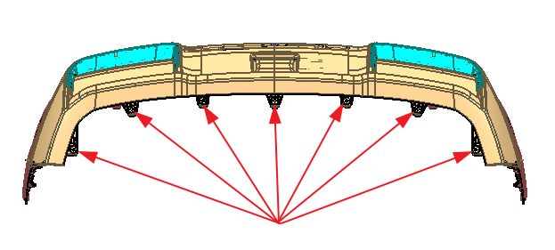
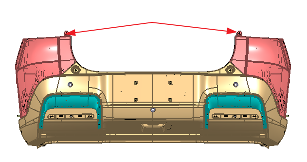
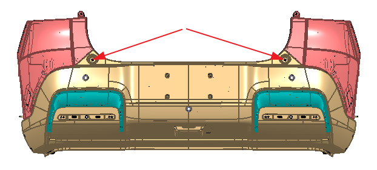
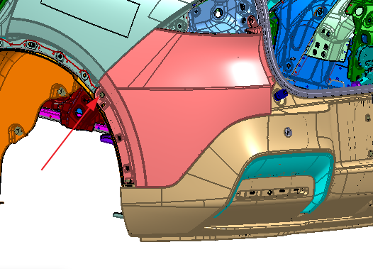
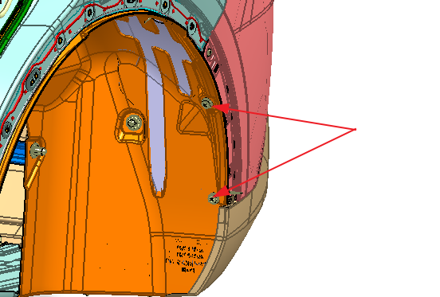
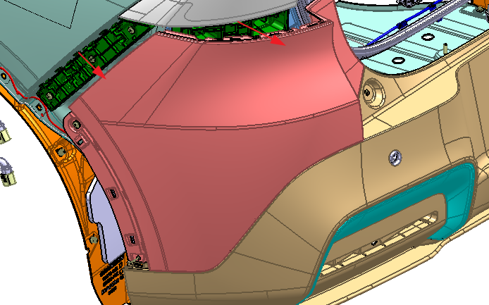
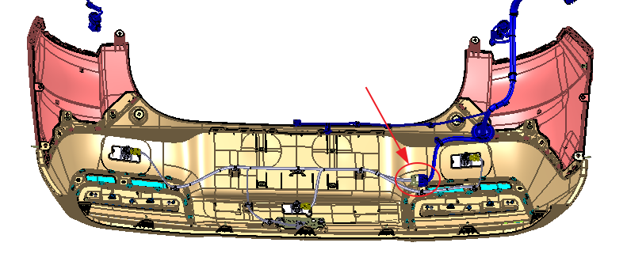

拆卸
拆除组合后灯总成I（左/右）饰板，参考 后组合灯 ;
拆除后轮眉后段（左/右），参考 拆卸和安装前轮眉及后轮眉总成；
用10号套筒拆下后保下侧7颗M6螺栓 ；

用10号套筒拆下后保流水槽上部两颗M6螺栓 ；

用T30批头拆下后保流水槽下部两颗M6螺栓 ；

用十字螺丝刀拆卸后保左右两侧与侧围两侧各1颗自攻钉；

用十字螺丝刀拆卸后保两侧与轮罩衬板两侧各2颗子母推钉

用手朝箭头方向把后保拉出，左右对称；

断开后保险杠线束与主线束插接头，用取卡器取下线束和后保的安装卡子，取下后保险杠总成，此处建议2人操作；

倒车雷达拆卸：参考 自动泊车传感器总成拆装 ;
组合后灯总成Ⅲ拆卸 :参考 后组合灯 ; 。
毫米波雷达拆卸：参考 侧向毫米波雷达总成
安装
安装顺序与拆卸顺序相反。